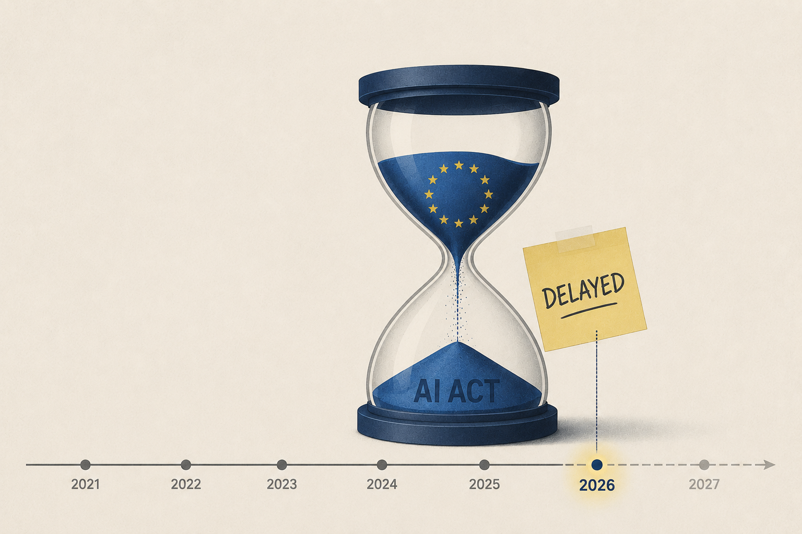

EU AI Act Implementation Timeline Delayed

Image Source: ChatGPT
The European Union has agreed to significantly extend the implementation timeline for several key provisions of the AI Act in response to concerns from businesses, Member States, and industry groups about the complexity and cost of compliance. Under the revised schedule, many obligations for stand-alone high-risk AI systems will generally apply from December 2, 2027, rather than August 2026, while requirements for high-risk AI embedded in regulated products will apply from August 2028. The reforms also postpone the rollout of national AI regulatory sandboxes and simplify certain compliance requirements, particularly for small and medium-sized enterprises.
According to EU policymakers, these changes are intended to reduce administrative burdens, provide organizations with sufficient time to build effective AI governance programs, and support European innovation and competitiveness, while preserving the AI Act’s core objective of ensuring that AI systems are safe, trustworthy, and respectful of fundamental rights.
Source (Council of the EU) →